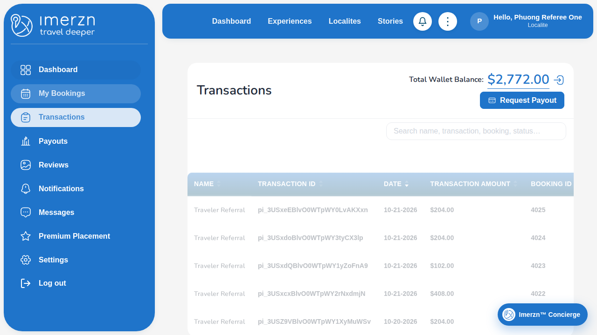

Passed: 22 | Failed: 1 | Flaky: 0 | Skipped: 0
Error: Step "Referee: check a transaction in My Transactions" failed: No paid Ongoing booking can be completed yet (Ongoing: 4025, 4024, 4023, 4022; with Complete booking: none). "Complete booking" appears only after the booking's start time. The last steps of this test book and pay for "Experience For Referral" as Traveler Referral; wait until that booking starts, or book and pay an earlier slot once by hand.
at ../helpers/step.ts:17
15 | const message = error instanceof Error ? error.message : String(error);
16 | console.error(`[FAILED] ${title}: ${message}`);
> 17 | throw new Error(`Step "${title}" failed: ${message}`, { cause: error });
| ^
18 | }
19 | });
20 | }
at /home/runner/work/Imerzn-WebTest/Imerzn-WebTest/helpers/step.ts:17:13
at /home/runner/work/Imerzn-WebTest/Imerzn-WebTest/tests/localite/referral-program.spec.ts:76:3
[cause]: Error: No paid Ongoing booking can be completed yet (Ongoing: 4025, 4024, 4023, 4022; with Complete booking: none). "Complete booking" appears only after the booking's start time. The last steps of this test book and pay for "Experience For Referral" as Traveler Referral; wait until that booking starts, or book and pay an earlier slot once by hand.
at /home/runner/work/Imerzn-WebTest/Imerzn-WebTest/tests/localite/referral-program.spec.ts:92:13
at /home/runner/work/Imerzn-WebTest/Imerzn-WebTest/helpers/step.ts:12:14
at /home/runner/work/Imerzn-WebTest/Imerzn-WebTest/tests/localite/referral-program.spec.ts:76:3
